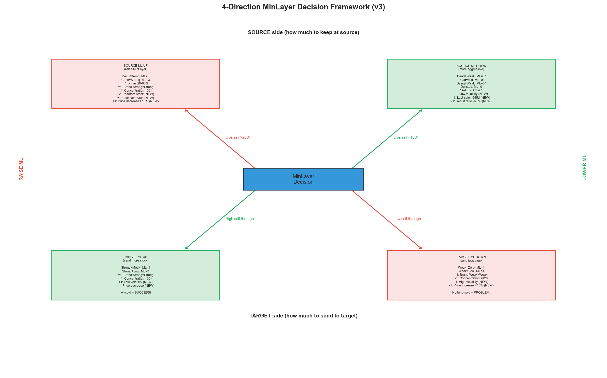
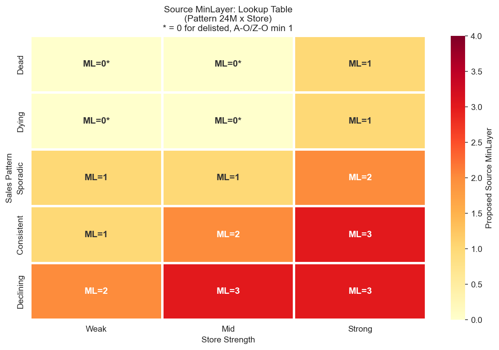
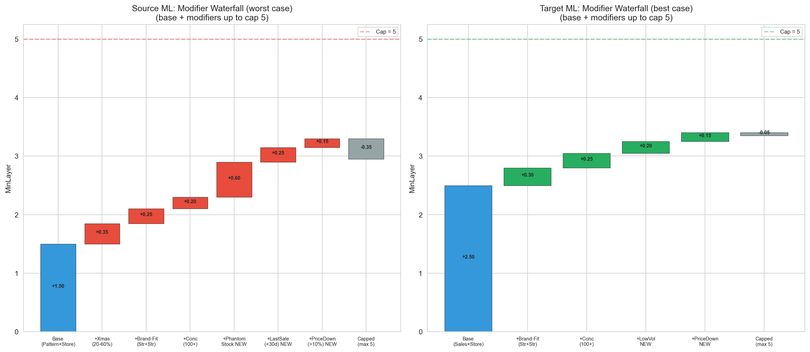
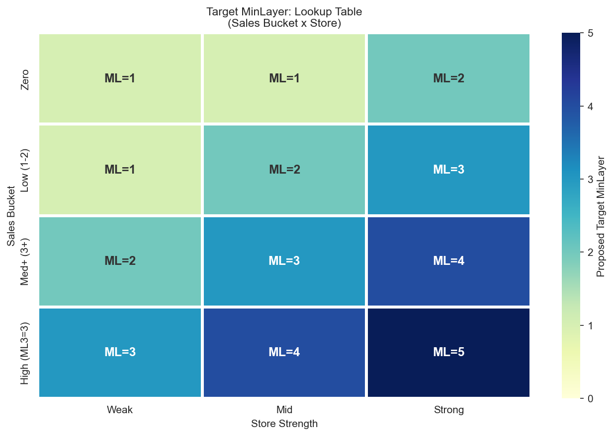
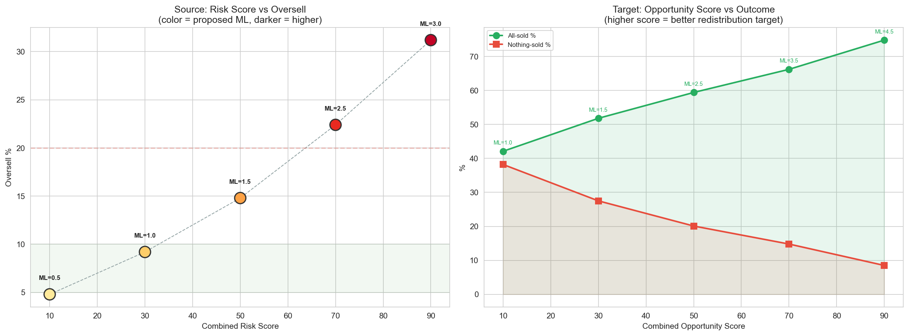

CalculationId=233 | Date: 2025-07-13 | Generated: 2026-03-22 13:28
Pravidla vychazi z Report 1. Strom ma 4 smery: source up, source down, target up, target down. v3: rozsireno o 6 novych modifikatoru (stockout, volatility, last-sale-gap, redist ratio, price change).

| Direction | When | Action | Reason |
|---|---|---|---|
| SOURCE UP | Oversell >20% | Ponechat vice na source | Produkty se stale prodavaji |
| SOURCE DOWN | Oversell <10% | Vzit vice ze source | Produkty se neprodavaji |
| TARGET UP | High sell-through | Poslat vice na target | Target proda vse |
| TARGET DOWN | Low sell-through | Poslat mene na target | Target neproda |

| Pattern | Store | Reorder % | Oversell % | ML | Rec | Dir |
|---|---|---|---|---|---|---|
| Dead | Weak | 24.5% | 5.1% | 0* | CAN LOWER ML | DOWN |
| Dead | Mid | 29.5% | 7.8% | 0* | CAN LOWER ML | DOWN |
| Dead | Strong | 31.4% | 10.0% | 1 | OK | OK |
| Dying | Weak | 29.7% | 8.1% | 0* | CAN LOWER ML | DOWN |
| Dying | Mid | 35.4% | 9.7% | 0* | CAN LOWER ML | DOWN |
| Dying | Strong | 37.1% | 12.6% | 1 | OK | OK |
| Sporadic | Weak | 37.2% | 10.9% | 1 | OK | OK |
| Sporadic | Mid | 44.1% | 15.3% | 1 | OK | OK |
| Sporadic | Strong | 47.8% | 20.1% | 2 | MUST RAISE ML | UP |
| Consistent | Weak | 46.4% | 13.2% | 1 | OK | OK |
| Consistent | Mid | 56.0% | 22.7% | 2 | MUST RAISE ML | UP |
| Consistent | Strong | 56.5% | 28.0% | 3 | MUST RAISE ML | UP |
| Declining | Weak | 55.3% | 25.1% | 2 | MUST RAISE ML | UP |
| Declining | Mid | 64.7% | 28.3% | 3 | MUST RAISE ML | UP |
| Declining | Strong | 68.0% | 35.4% | 3 | MUST RAISE ML | UP |
* = 0 pro delisted, ale A-O/Z-O minimum ML=1.
| Rule | Condition | ML | Reason |
|---|---|---|---|
| Active orderable | SkuClass = A-O (9) | MIN = 1 | Aktivni zbozi musi zustat |
| Z orderable | SkuClass = Z-O (11) | MIN = 1 | Z zbozi stale objednatelne |
| Delisted | SkuClass = D(3), L(4), R(5) | = 0 | Delisted = bezpecne vzit vse |
| Modifier | Condition | Adj | Evidence | Status |
|---|---|---|---|---|
| Xmas sezónnost | Xmas share 20-60% | +1 | +9-11pp oversell | v2 |
| Brand-Store fit strong | Strong brand + Strong store | +1 | +16pp reorder gap | v2 |
| Siroka distribuce | Product on 100+ stores | +1 | +25.9pp reorder gap | v2 |
| Phantom stock (confirmed) | Supply bez predeje + product se jinde prodava | +2 | +19pp oversell, cross-store filtrovan | NEW v3 |
| Recentni prodej | Last sale <30 dni | +1 | +23pp oversell vs 365+d gap | NEW v3 |
| Cenovy pokles | Price decrease >10% | +1 | +8pp oversell vs stabilni cena | NEW v3 |
| Vysoka volatilita | Product CV >2.0 | +1 | +13pp oversell vs low CV | NEW v3 |
| Nizka volatilita | Product CV <0.5 | -1 | Nizsi oversell, predikovatelny | NEW v3 |
| Stary prodej | Last sale >365 dni | -1 | 5.9% oversell = safe | NEW v3 |


| Sales | Store | ST Total | All-sold % | Nothing % | ML | Dir |
|---|---|---|---|---|---|---|
| Zero | Weak | 0.76 | 53.7% | 43.7% | 1 | DOWN |
| Zero | Mid | 0.85 | 57.2% | 39.3% | 1 | DOWN |
| Zero | Strong | 1.18 | 66.5% | 31.8% | 2 | UP |
| Low(1-2) | Weak | 0.77 | 44.4% | 34.6% | 1 | DOWN |
| Low(1-2) | Mid | 0.88 | 48.6% | 28.8% | 2 | OK |
| Low(1-2) | Strong | 1.09 | 57.1% | 22.3% | 3 | OK |
| Med+(3+) | Weak | 1.42 | 67.2% | 12.6% | 2 | UP |
| Med+(3+) | Mid | 1.57 | 69.3% | 12.5% | 3 | UP |
| Med+(3+) | Strong | 1.83 | 74.7% | 9.0% | 4 | UP |
| High (ML3=3) | Weak | >1.5 | >75% | <5% | 3 | UP |
| High (ML3=3) | Mid | >1.5 | >75% | <5% | 4 | UP |
| High (ML3=3) | Strong | >1.5 | >75% | <5% | 5 | UP |
| Modifier | Condition | Adj | Evidence | Status |
|---|---|---|---|---|
| Brand Strong+Strong | Strong brand + Strong store | +1 | 65.7% all-sold | v2 |
| Brand Weak+Weak | Weak brand + Weak store | -1 | 30.7% nothing-sold | v2 |
| Siroka distrib. | 100+ stores | +1 | 63.2% all-sold | v2 |
| Niche product | ≤20 stores | -1 | 38.6% nothing-sold | v2 |
| Nizka volatilita (tgt) | CV <0.5 | +1 | 64.5% all-sold, predikovatelny | NEW v3 |
| Vysoka volatilita (tgt) | CV >2.0 | -1 | 29.4% nothing-sold | NEW v3 |
| Cenovy pokles (tgt) | Price down >10% | +1 | 63.8% all-sold (vice lidi kupuje) | NEW v3 |
Alternativni pristup k lookup table: synteticky score 0-100 kombinujici vsechny faktory.

| Factor | Weight | Low value | High value |
|---|---|---|---|
| Sales Pattern | 30% | Dead = 0 | Declining = 100 |
| Store Strength | 20% | Weak = 0 | Strong = 100 |
| Phantom Stock (cross-store) | 15% | Not phantom = 0 | Confirmed = 100 |
| Product Volatility | 15% | CV<0.5 = 0 | CV>2.0 = 100 |
| Last Sale Gap | 10% | 365+d = 0 | 0-30d = 100 |
| Price Change | 5% | Increase = 0 | Decrease >10% = 100 |
| Xmas Season | 5% | Non-seasonal = 0 | 20-60% = 100 |
| Factor | Weight | Low value | High value |
|---|---|---|---|
| Sales Bucket | 30% | Zero = 0 | Med+ = 100 |
| Store Strength | 25% | Weak = 0 | Strong = 100 |
| Brand-Store Fit | 15% | Weak+Weak = 0 | Str+Str = 100 |
| Brand-Store Fit (tgt) | 10% | Weak+Weak = 0 | Strong+Strong = 100 |
| Product Volatility | 10% | CV>2.0 = 0 | CV<0.5 = 100 |
| Price Change | 5% | Increase >10% = 0 | Decrease >10% = 100 |
| Concentration | 5% | ≤20 stores = 0 | 100+ stores = 100 |
FUNCTION CalculateSourceMinLayer_v3(sku, store):
-- 1. Delisting override
IF sku.SkuClass IN (3, 4, 5): -- D, L, R
RETURN 0
-- 2. Base ML from Pattern x Store lookup
pattern = ClassifySalesPattern24M(sku, store)
strength = ClassifyStoreStrength(store.Decile)
base = SOURCE_LOOKUP[pattern][strength]
-- 3. Business rules (A-O/Z-O min 1)
IF sku.SkuClass IN (9, 11):
base = MAX(base, 1)
-- 4. v2 Modifiers
IF sku.XmasShare BETWEEN 0.20 AND 0.60: base += 1
IF BrandStoreFit(sku, store) == 'Strong+Strong': base += 1
IF sku.StoreCount > 100: base += 1
-- 5. NEW v3 Modifiers (UP)
IF IsConfirmedPhantomStock(sku, store): -- cross-store filtered
base += 2 -- strong signal: +19pp oversell
IF sku.LastSaleGapDays < 30: base += 1 -- recent sale
IF sku.PriceChangePct < -10: base += 1 -- price decreased
IF sku.VolatilityCV > 2.0: base += 1 -- unpredictable
-- 6. NEW v3 Modifiers (DOWN)
IF sku.VolatilityCV < 0.5: base -= 1 -- very predictable
IF sku.LastSaleGapDays > 365: base -= 1 -- long time no sale
RETURN CLAMP(base, 0, 5)
FUNCTION CalculateTargetMinLayer_v3(sku, store):
-- 1. Base ML from Sales x Store lookup
bucket = ClassifySalesBucket(sku, store)
strength = ClassifyStoreStrength(store.Decile)
base = TARGET_LOOKUP[bucket][strength]
-- 2. v2 Modifiers
IF BrandStoreFit(sku, store) == 'Strong+Strong': base += 1
IF BrandStoreFit(sku, store) == 'Weak+Weak': base -= 1
IF sku.StoreCount > 100: base += 1
IF sku.StoreCount <= 20: base -= 1
-- 3. NEW v3 Modifiers (UP)
IF sku.VolatilityCV < 0.5: base += 1 -- predictable demand
IF sku.PriceChangePct < -10: base += 1 -- cheaper = sells more
-- 4. NEW v3 Modifiers (DOWN)
IF sku.VolatilityCV > 2.0: base -= 1 -- unpredictable
RETURN CLAMP(base, 1, 5) -- min 1 (A-O/Z-O rule)
Generated: 2026-03-22 13:28 | CalculationId=233 | EntityListId=3 | v3 Advanced Analytics